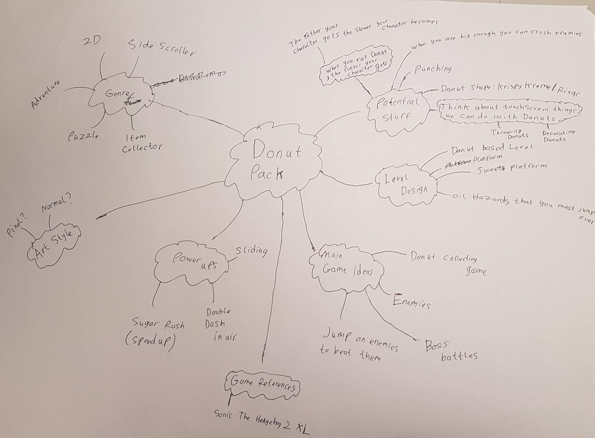

Week 1 - The Beginning
Date Created: Oct 11, 2021
Today me and my friends Shaafie and Hassan formed a 3 man team for the project and we named it PackedUp. Once we formed teams I suggested an idea about making a Donut platformer game because when I was younger and doing a game design course at college my little sister said that I should make a game about donuts and since none of us could think of an idea I thought that it would be a good time to use that suggestion from my sister, I also had a donut not too long before having to think of a game idea.
Once Shaafie and Hassan agreed to make this Donut based platformer game we got a A3 sheet of paper and we started to write down any ideas we could think of. We went over to our lecturer Hope to see what she thought of the idea and she gave us some useful feedback to make the game more interesting and unique by having a feature that uses a mobile feature like swiping or shaking the phone which was a good suggestion for us because our initial idea was pretty much just a basic platformer where you collect donuts and it would be more like a PC game than a mobile game.
We went back to our desk where Shaafie created a trello board then we brainstormed a few ideas where we have to find the ingredients, make the donuts and packaging the donuts which will all include some sort of mobile feature like swiping.
